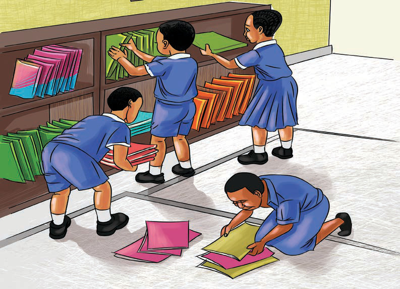

Ushirikiano katika kazi mbalimbali kama inavyoonekana katika Kielelezo namba 10 ni miongoni mwa vitendo vya kimaadili.

Kielelezo namba 10: Wanafunzi wakishirikiana kazi shuleni
Ni wajibu wetu kushirikiana katika kazi za shuleni na nyumbani. Jamii za kale zilishirikiana katika kazi zilizofanyika katika maeneo yao, kama vile kufanya usafi, kuchimba visima na kutengeneza barabara. Watu wote katika jamii wanaume, wanawake na watoto, walitakiwa kufanya kazi hizi kwa pamoja.
Pia, ushirikiano ulifanyika katika shughuli za sherehe, misiba na mazishi kama inavyoonekana katika Kielelezo namba 11.